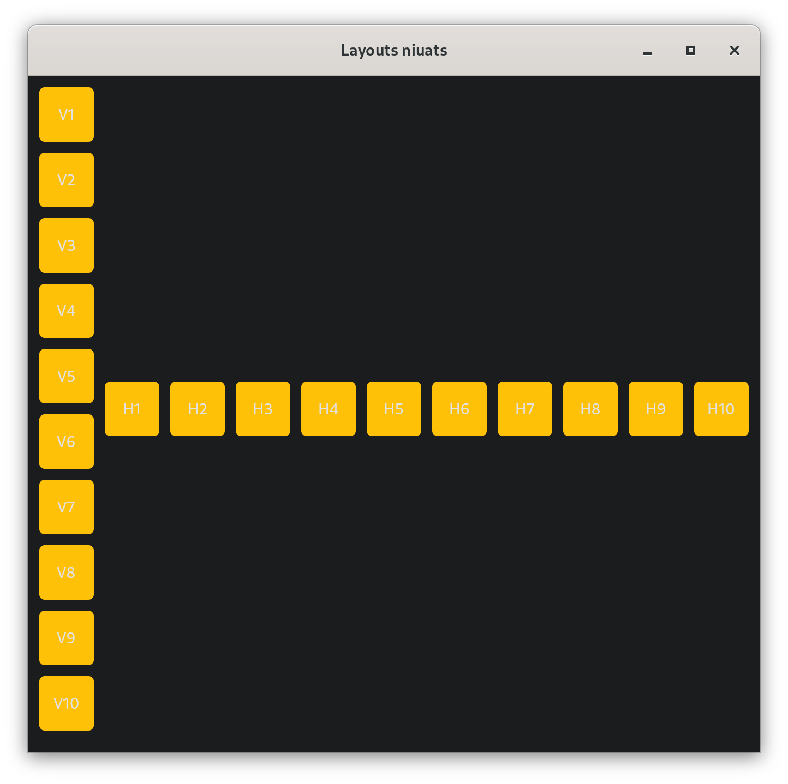
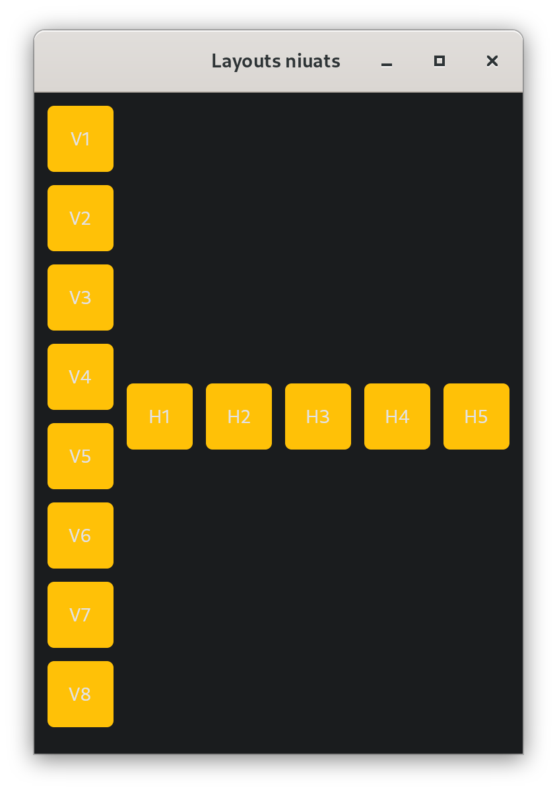

Activitats
Activitat 1 - Habilitació i deshabilitació de controls
Partint del següent codi vist en la teoria:
Modifica'l per a que el botó Afegir es desactive sempre que la caixa de text new_task estiga en blanc.
Pistes
- La caixa de text estarà buida en diferents ocasions, al principi, en afegir una tasca i en borrar un text introduït.
- Fes ús de
disabledper a canviar l'estat del control. - Investiga quins esdeveniments es produixen al borrar el text.
Activitat 2 - Layouts niuats
Un layout és un control que a la vegada pot contindre altres controls. Aleshores, podem niuar diversos layouts per dissenyar la nostra aplicació com desitgem.
Desenvolupa una aplicació on pugam canviar (modificant una variable al codi) el nombre d'elements en una columna i en una fila. El tamany de la finestra s'ha de calcular automàticament segons el nombre d'elements que definim, encara que després es podrà reassignar el seu tamany:


Pista
- Per a canviar el tamany fes ús de la propietat page.window_width i page.window_height.
- Pensa quants i de quin tipus són els layouts abans de començar a desenvolupar.